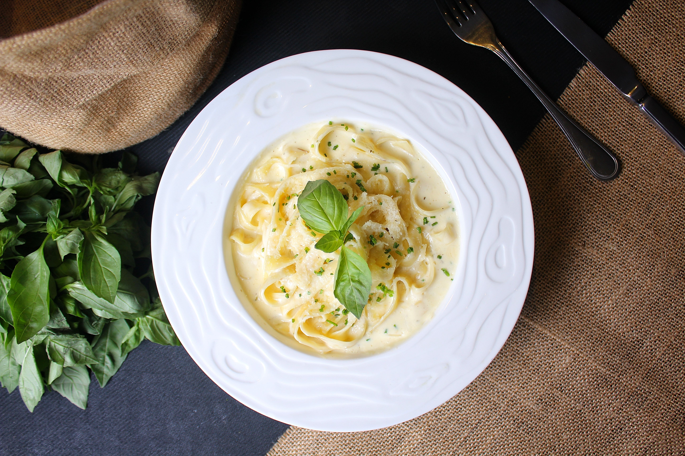

Home
Chicken Alfredo Recipe

Description
Chicken Alfredo is a creamy Italian-American pasta dish made with tender pieces of chicken and fettuccine pasta covered in a rich, buttery Alfredo sauce. The sauce is traditionally made with butter, cream, and parmesan cheese.
Flavoured with garlic, black pepper, and Italian seasoning, this dish is perfect for anyone who enjoys creamy and savoury flavours. It is best served hot with garlic bread or a fresh side salad.
Ingredients
- 400 g fettuccine pasta
- 2 chicken breasts, boneless and skinless
- 2 tbsp olive oil
- 2 tbsp butter
- 3 garlic cloves, minced
- 1 1/2 cups heavy cream
- 1 cup grated parmesan cheese
- 1 tsp Italian seasoning
- 1/2 tsp paprika
- 1/2 tsp black pepper
- 1 tsp salt, or to taste
- 1/4 cup pasta water
- 1 tbsp fresh parsley, chopped
Steps
- Season the chicken breasts with salt, black pepper, paprika, and Italian seasoning.
- Heat olive oil in a large pan over medium heat. Cook the chicken for 5–7 minutes on each side until golden brown and fully cooked. Remove from the pan and let it rest before slicing.
- Cook the fettuccine pasta in a large pot of salted boiling water according to the packet instructions. Reserve 1/4 cup of pasta water before draining.
- In the same pan, melt butter over medium heat. Add minced garlic and cook for 1 minute until fragrant.
- Pour in the heavy cream and stir gently. Add parmesan cheese and black pepper. Cook for 3–5 minutes until the sauce becomes creamy. Add pasta water if needed to loosen the sauce.
- Add the cooked fettuccine to the sauce and toss until evenly coated. Slice the chicken and place it on top of the pasta.
- Garnish with fresh parsley and extra parmesan cheese. Serve hot.